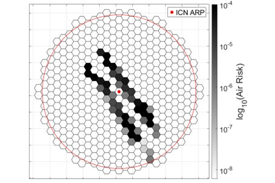

Risk-Based Airspace Capacity Assessment for Small Unmanned Aircraft in Urban Environments
Transportation Research Part A: Policy and Practice, under review, 2026.
Under review
UTM · AAM
M.S. Student in Advanced Air Transportation
Korea Aerospace University
My research focuses on traffic management approaches for safe, efficient, and scalable UTM and AAM operations. In particular, I investigate decentralized traffic management, multi-agent conflict resolution, path planning, and GIS-based airspace network design for large-scale operations through game theory, optimization, and reinforcement learning.
I am interested in extending these approaches to emerging challenges in autonomous aerial systems.

Research output
Transportation Research Part A: Policy and Practice, under review, 2026.

IEEE Transactions on Intelligent Transportation Systems, manuscript in preparation, 2026.

AIAA AVIATION 2026 Forum, 2026.

KSAS 2025 Fall Conference, 2025.

Current work

Game-theoretic bilateral and multilateral negotiation methods for resolving conflicts among UAS traffic management service providers, with a focus on system efficiency and fairness.

GIS-based low-altitude network design and scalable path planning for high-density drone delivery, incorporating operational constraints and ground-risk considerations.